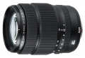

器材库 > 120中幅镜头 > GF 32-64/4 R LM WR

详细规格
镜头类型
标准变焦镜头
发布日期
2016-09-19
焦距
32mm-64mm
等效35mm画幅焦距
25mm-51mm
最大光圈
f/4
最小光圈
f/32
视角（对角）
81°-46.3°
镜头结构
14片/11组
非球面镜片
3片
低/超低色散镜片
1片ED镜片和1片超级ED镜片
光圈叶片
9片
最近对焦距离
广角50cm，长焦60cm
最大放大倍率
0.12倍
滤镜口径
77mm
镜头卡口
Fujifilm G
防抖
否
颜色
黑色
尺寸
92.6×116mm
重量
875g
附件
镜头盖 FLCP-77，镜头后盖 RLCP2，镜头遮光罩，镜头袋
备注
采用防尘防滴结构
hz12182019-10-22 00:395 分
操作性 5.00耐用性 5.00性价比 5.00解像力 5.00色彩还原 5.00机械结构 5.00
courbet2019-03-16 22:414.5 分
操作性 4.50耐用性 5.00性价比 4.00解像力 4.50色彩还原 4.50机械结构 4.50
产品图 / 样片
GF 32-64/4 R LM WR
评测 / 相关文章
- 详细内容 （存档）
- ［资讯］颠覆传统 大开视界 中画幅无反相机GFX 50s （存档）
- ［资讯］大政奉还 富士FUJIKINA新品发布会实录 （存档）
- ［资讯］剑指哈苏 富士发布中画幅无反相机GFX （存档）